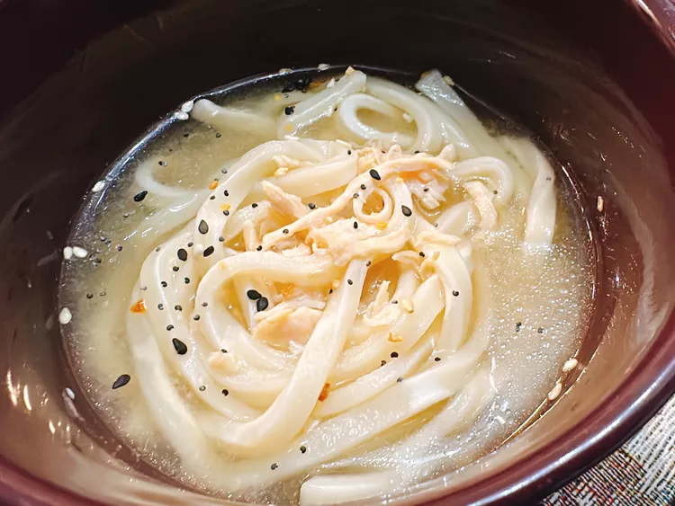

Miso Chicken Noodle Soup

This miso chicken noodle soup, with thick, chewy udon noodles
and a savory miso broth, is a tasty—and very easy—remake of
traditional chicken noodle soup.
Ingredients
- 1 1/2 cups water
- 8.5 ounces frozen udon noodles
- 4 ounces rotisserie chicken, shredded
- 1 tablespoon white miso paste
- everything bagel seasoning, to taste
Steps
- In a saucepan over medium high heat,
heat water to boiling. Add udon noodles.
Cook until noodles are softened, 4 to 5 minutes.
- Add rotisserie chicken.
- Turn heat to low. Remove 2 to 3 tablespoons water, and stir miso
paste into water until smooth.Mix diluted miso paste back into noodles.
Cook for 2 to 3 minutes.
- Ladle soup into bowls and garnish with everything bagel seasoning.